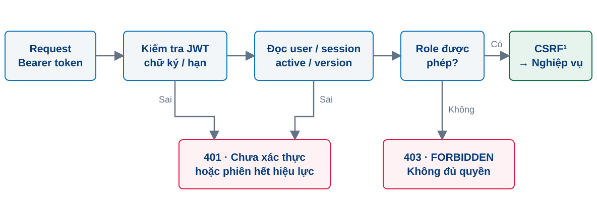
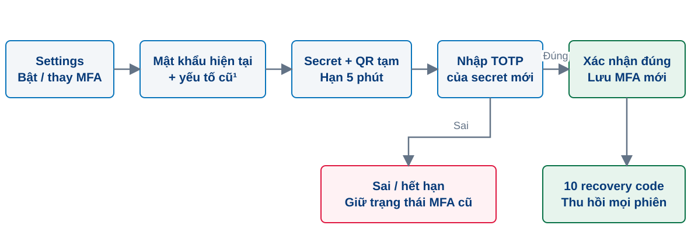
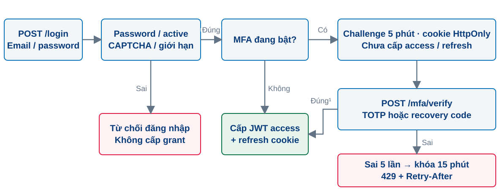

Block 10 · Phân quyền & MFA
THE TABLE / React CSR + Express API + PostgreSQL
Đúng người.
Đúng quyền.
Thêm một lớp xác thực.
9 slide chính · 1 phụ lục · Khoảng 10–12 phút
Từ Block 9 đến Block 10
Giữ nền tảng JWT; bổ sung quyền theo vai trò và bảo mật tài khoản
| Thành phần | Block 9 | Block 10 |
|---|---|---|
| Vai trò | viewer là nhãn tài khoản | viewer / editor / admin có quyền riêng |
| Đăng nhập | Password → access / refresh | Bật MFA → xác minh thêm trước khi cấp phiên |
| Tài khoản | Đăng ký / kích hoạt / reset | Thêm Settings, Authenticator, recovery code |
| Quản trị | Người dùng active truy cập CRUD | Admin cấp / thu hồi editor |
Ma trận RBAC
Ba vai trò · Quyền tăng theo phạm vi công việc
| Chức năng | viewer | editor | admin |
|---|---|---|---|
| Xem thực đơn / chi tiết món | Có | Có | Có |
| Thêm / sửa / xóa món ăn | Không | Có | Có |
| Xem / chọn đầu bếp, nguyên liệu¹ | Không | Có | Có |
| Thêm / sửa / xóa đầu bếp, nguyên liệu | Không | Không | Có |
| Xem tài khoản; cấp / thu hồi editor² | Không | Không | Có |
| Settings / mật khẩu / MFA của bản thân | Có | Có | Có |
¹ Trong trang quản trị; thực đơn / chi tiết món vẫn công khai.
² Chỉ đổi viewer ↔ editor của tài khoản active; không thay đổi admin.
Sơ đồ luồng phân quyền
Kiểm tra tại API, kể cả khi gọi trực tiếp và bỏ qua giao diện

Cấp / thu hồi editor
Admin đổi quyền; các phiên cũ của tài khoản đích bị thu hồi
Luồng thao tác
- Admin mở
/admin/users, tìm email. - Chọn tài khoản active có role viewer hoặc editor.
- Cấp editor hoặc thu hồi về viewer.
- Tài khoản đích đăng nhập lại để dùng quyền mới.
API thực thi
{role: "viewer" | "editor"}- Đọc lại quyền admin trong transaction.
- Tăng
userVersion. - Thu hồi mọi session của tài khoản đích.
Sơ đồ bật / thay Authenticator
Chỉ kích hoạt secret mới sau khi xác minh TOTP thành công

Sơ đồ đăng nhập MFA
Tài khoản bật MFA phải hoàn tất yếu tố thứ hai trước khi có phiên đăng nhập

Recovery code & Settings
Giữ quyền kiểm soát khi đổi mật khẩu hoặc thay thiết bị
Recovery code
- 10 mã mỗi bộ; mỗi mã chỉ dùng một lần.
- Hiển thị một lần; có sao chép / tải xuống.
- Database lưu HMAC; tạo bộ mới vô hiệu bộ cũ.
Thao tác bảo mật
- Đổi mật khẩu, bật / thay / tắt MFA.
- Xác nhận mật khẩu và yếu tố cũ nếu MFA đang bật.
- Thành công → thu hồi mọi phiên; vẫn cho lưu recovery mới.
Kịch bản trình diễn
Thực hiện lần lượt để đối chiếu ma trận quyền và hai lớp xác thực
| Bước | Thao tác | Kết quả cần quan sát |
|---|---|---|
| 1 · viewer | Mở thực đơn; thử truy cập quản trị | Xem món; thao tác quản trị bị chặn |
| 2 · editor | Sửa món; mở danh mục đầu bếp | Sửa món được; chỉ xem / chọn đầu bếp |
| 3 · admin | Cấp rồi thu hồi editor | Phiên tài khoản đích mất hiệu lực |
| 4 · Bật MFA | Quét QR; xác nhận TOTP mới | Hiện recovery code; yêu cầu đăng nhập lại |
| 5 · Đăng nhập | Password → OTP / recovery | Chỉ cấp phiên sau xác minh MFA |
A1 · Nguồn đối chiếu
Sơ đồ tự dựng theo mã nguồn Block 10; template kế thừa Block 9
| Nội dung | Nguồn trong repository |
|---|---|
| Ma trận quyền và middleware | api/src/app.ts |
| Cấp editor; setup / verify MFA; recovery | api/src/security.ts |
| JWT; kiểm tra phiên và version | api/src/token-sessions.ts |
| Route guard; Settings; quản lý editor | web/src/App.tsx · web/src/pages/Security.tsx |
| Kiểm thử tham khảo | api/test/security.test.ts · scripts/security-browser-check.ts |
Sơ đồ SVG có thể mở độc lập trong assets/. Không dùng log hoặc ảnh Block 9 làm minh chứng RBAC / MFA của Block 10.